Summary
In this small scale experiment, resorbing zooids and take over zooids, two distinct asexual developmental stages sourced from the same Botryllus individual, were seeded separately onto 3.8 cm2 wells.
Of the seeded take over zooid tissue, the Cultrex RGF BME or Cultrex BME resulted in lower a lower instances of epithelial monolayer output relative to tissue seeded directly on the cell culture treated plastic plate despite similar frequencies of tissue adherence and stocking densities.
On October 3rd, 34 days post seeding, all tissue continues to persist in culture with no sign of contamination or degradation but no further addition to the initially observed monolayers.
Schematic

Empty represents blank wells.
General Information
Date and Time
August 30, 2023
Preparation of epithelial isolation began on 08/30/23.
Individual S105C002 was subdivided. Using a razor blade, the portion of the colony that was not adhered to the glass slide was removed and tied to slide S105C003.
Glass slide S105C002 was cleaned thouroughly as described in protocol below.
Individual S105C002 was set in 100 mL of Autoclaved Artificial Seawater - Gentamicin (0.05%) (ASW-G) for a 14 hour quarantine period.
August 31, 2023: 0 days post seeding (dps)
S105C001 was dissected for zooids on 08/31/23
Dissections began at 2:40 PM and ended at 6 PM
Zooids were transferred to an aliqout of 1 mL tunicate culture media (TCM) in batches of 10.
Zooid tissue was seeded at approximately 7:20 PM. 10 zooids per well.
S105C002 was dissected for intact ampullae on at about 4 PM as well as blood cells.
Ampullae and blood cells were added directly to aliquot of media. Ampullae were added by scooping. Blood cells were added by using the syringe plunger on the insulin needle. Once a sufficient amount of material was gathered, material was spun down for 5 seconds with mini centrifuge (2000 x g). Excess media was removed using 1000 uL pipette tip. Media was replaced with fresh 1 mL aliquot.
1 mL of TCM was added to all wells in 12-well cell culture flasks.
Source and Handling of Starting Material
Intake Procedure
All tunicates when collected from marina are transported to UWT in 500 mL Nalgene polycarbonate jars filled completely with local marina water. Jars are placed in a cooler to maintain temperature for 30 minute drive back to UWT (from City of De Moines Marina).
Upon arrival, tunicates are removed from mussel using a razor blade or kept with substrate and tied to 3’’ x 2’’ x 1.2 mm glass slide using cotton thread. Tunicates are immediately placed in UWT recirculating artificial seawater system (16 C, 27 PPT).
Tunicates are fed every other day (MWF) a mix of commercially available phytoplankton and roti-rich.
Colony S105C002 was mechanically subdivided using a razor blade on 08/20/23 directly before submersion in ASW-G overnight.
Defining Health Score
0-dead (no bloodflow)
2-very bad w heartbeat
4- poor (amp retract, high pigm, tunic puffy)
6-fair (part poor)
8- good (most amp extended, normal tunic & pigm)
10- great (all amp extended, tunic flat, clear, normal pigm)
Colony Information At Dissection (08/31/23)
| colony_id | establishment_date | sampling_location | stage | zooid_num | health_score |
|---|---|---|---|---|---|
| S105C002 | 08/25/23 | De Moines Marina (47.44, -122.34) | TO | 49 | 6 |
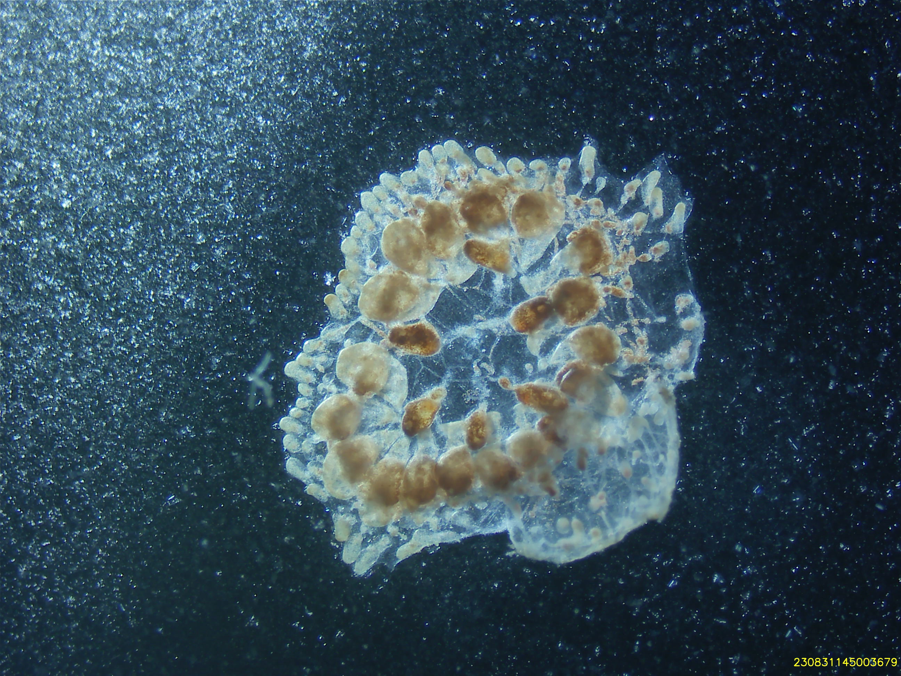
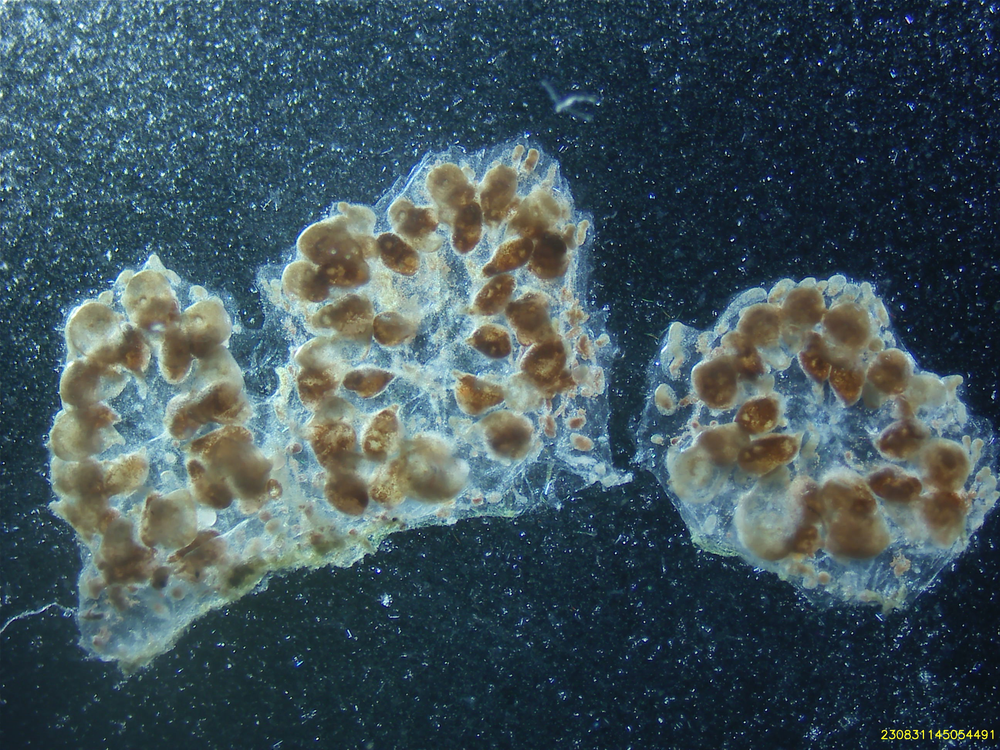
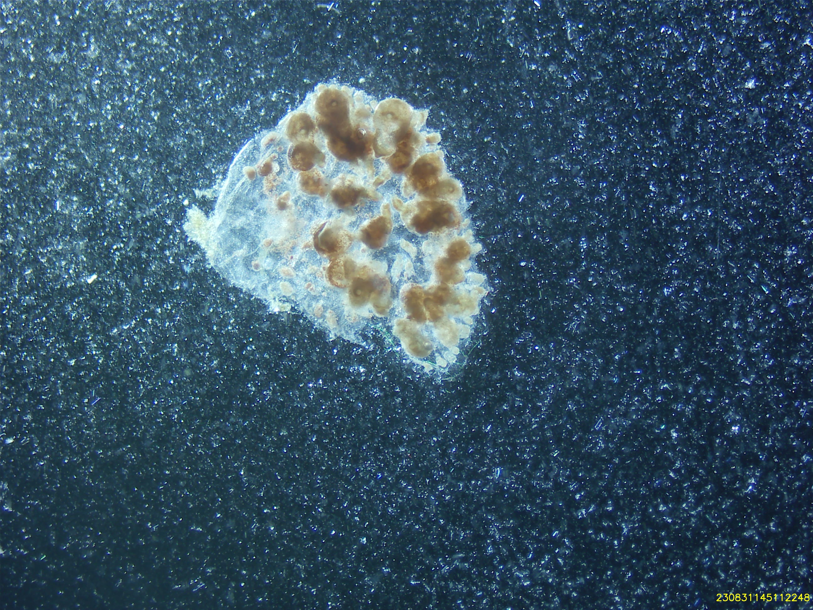
Cell Isolation Technique
- Epithelial cell isolation occurred mechanically with the use of a pair of 28 G insulin needles.
Culture Medium Composition
Tunicate Culture Media:
- 24.5 mL Basal L-15 Media (formulated and initially filtered on 06/12/23, re-filtered after cracking container on 08/21/23)
5 % FBS
2% Penicillin-Streptomycin (stock = 100 U)
11 mL concentrated, filtered artificial seawater (stock = 75 PPT)
500 uL HEPES buffer (stock = 20 mM/L)
50 uL Amphotericin B (stock = 250 ug/mL)
Description of Culture Vessels and Substrates
Vessel: Corning Incorporated 12 well cell culture plate, surface area per well 3.8 cm2 (Cat. No. 3513) - Justification: To use various substrate types for the same genotype/individual.
Substrates:
Thin Layer, Cultrex Basement Membrane Extract, PathClear (Cat. No. 3432-001-01)
Thin Layer, Cultrex Reduced Growth Factor Basement Membrane Extract, PathClear (Cat. No. 3433-001-01)
Plastic
Temperature and Environment
08/31/23: UW Tacoma, Science Building (SCI) incubator, room 232.
- Temperature: 18 C
- Light: 0
- Humidity: 90%
09/01/23:
- Temperature: 18 C
- Light: 0
- Humidity: 90%
09/02/23: UW Tacoma, Science Building (SCI) incubator, room 232.
- Temperature: 18 C
- Light: 0
- Humidity: 90%
10/01/23: UW Tacoma, Science Building (SCI) incubator, room 232.
- Temperature: 18 C
- Light: 0
- Humidity: 99%
Tissue Seeding Density
Document the number of cells seeded in each culture vessel.
- 08/31/23: 10 zooids per well (surface area = 3.8 cm2)
- 2.6 zooids per cm2
- 09/02/23: Some zooids lost in aspiration as they were unadhered.
| Date | Well | Tissue Total | Attached Tissue | tissue/cm2 |
|---|---|---|---|---|
| 09/02/23 | A1 | 5 | 3 | 1.3 |
| 09/02/23 | A2 | 5 | 4 | 1.3 |
| 09/02/23 | A3 | 5 | 3 | 1.3 |
| 09/02/23 | B1 | 8 | 6 | 2.1 |
| 09/02/23 | B2 | 9 | 7 | 3.3 |
Observations and Growth Monitoring
Regularly document your observations, including cell morphology, attachment, aggregation, or any changes in appearance. Include photographs if possible.
09/02/23 (2 dps):
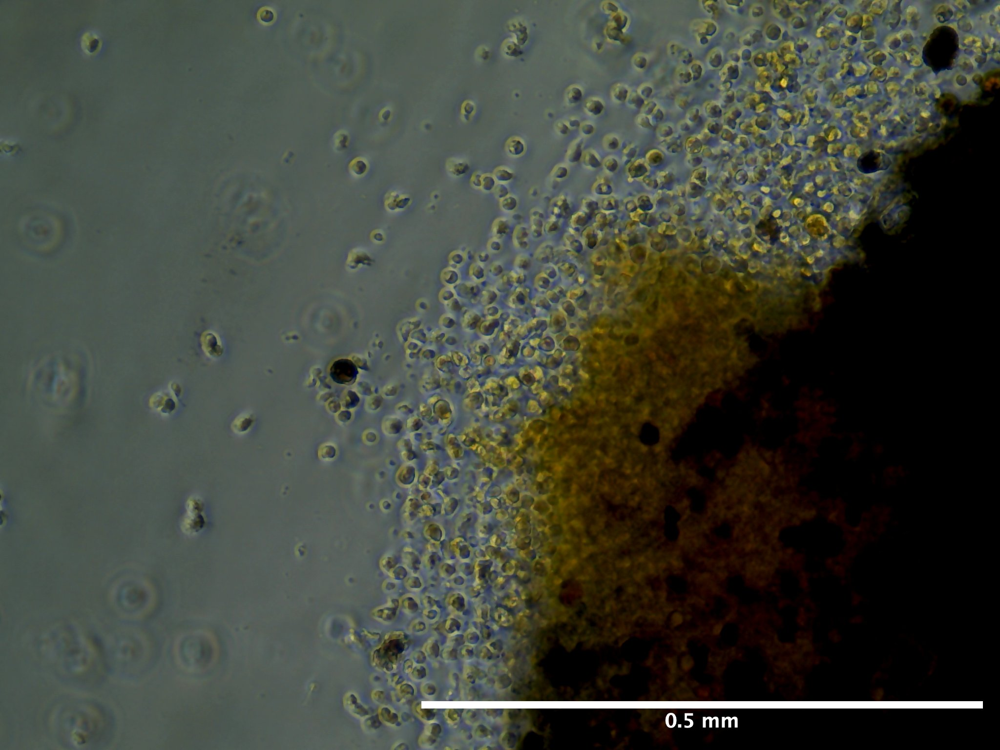
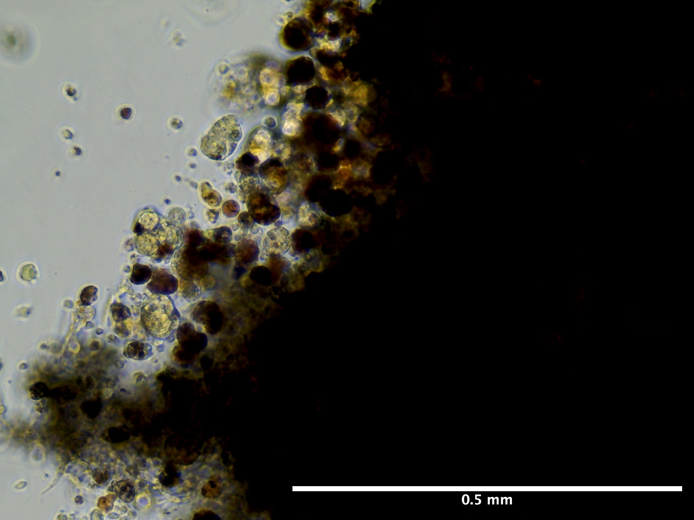
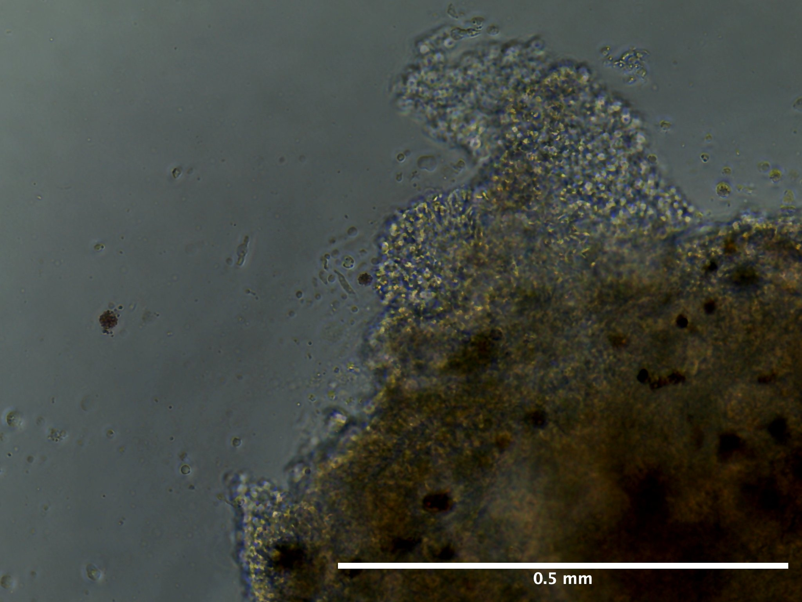
09/13/23 (13 dps):
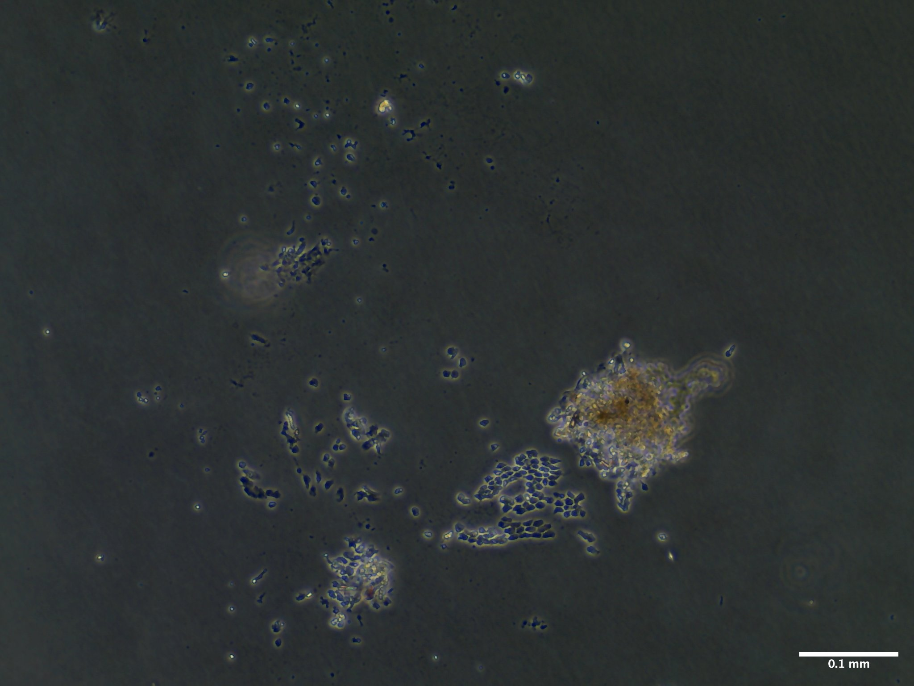
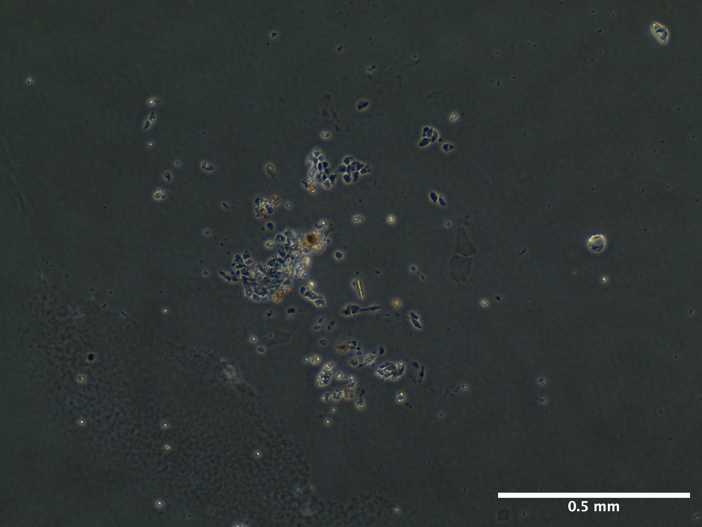
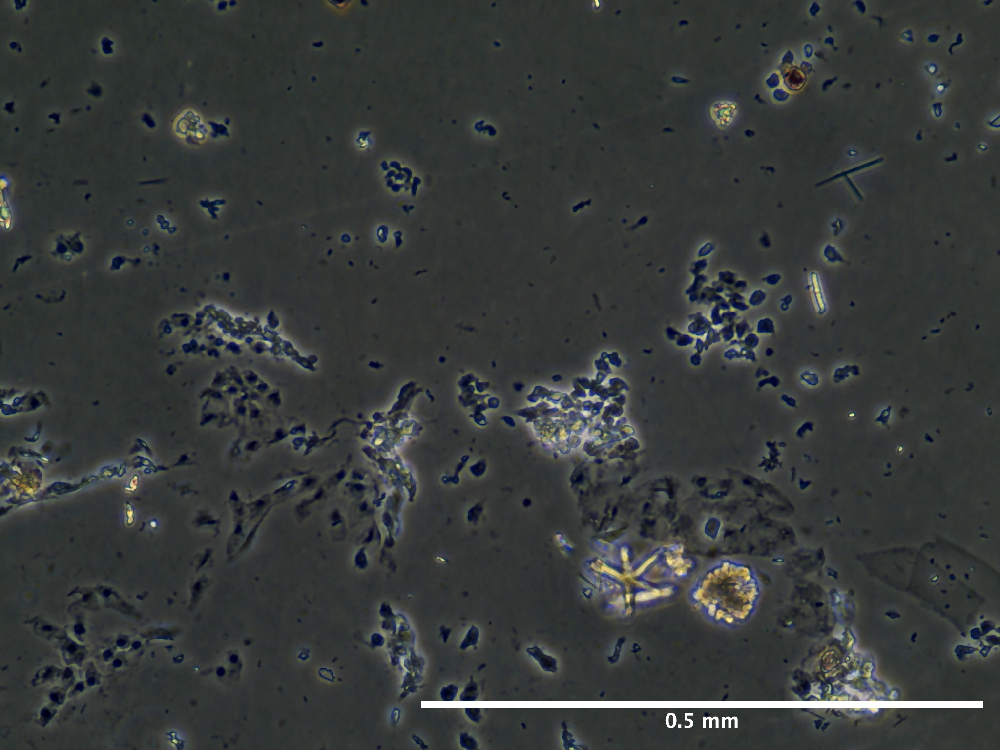
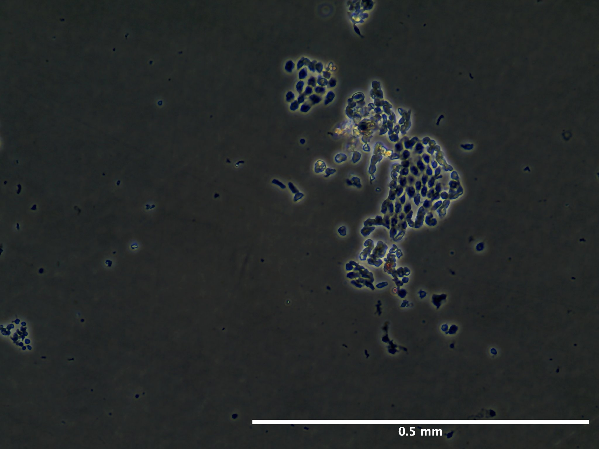
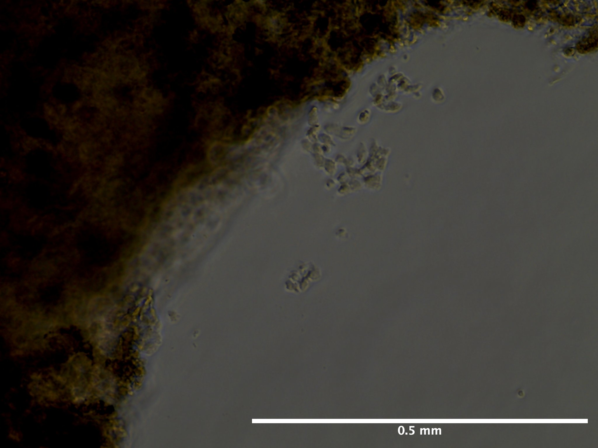
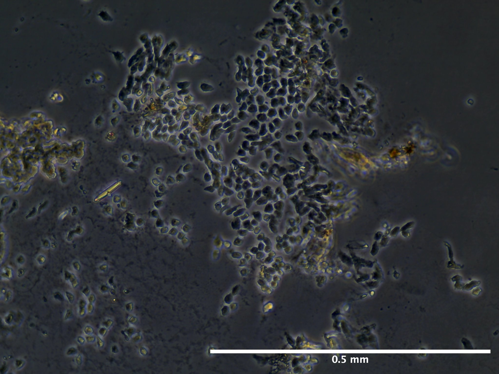
Viability and Proliferation
Note any signs of cell viability (e.g., cell membrane integrity, absence of debris). Monitor cell proliferation by documenting changes in cell density over time.
pH and Nutrient Levels
If possible, measure and record the pH of the medium during the culture. Monitor nutrient consumption by measuring glucose or other nutrients if relevant.
Media Changes and Additions
08/31/23 (0 dps): Added 1 mL of media at 0 dps to all wells (A1-A3 and B1-B3).
09/01/23 (1 dps): Removed all media from wells A1, A2, B1, B2 due to contamination and lack of tissue adherence. Duplicate 1 mL TCM wash to those wells. Addition of 200 uL of media to those wells. 1 mL addition to well A3. Termination of well B3.
09/02/23 (2 dps): For wells A1, A2, B1, B2, 100-90 uL evaporated per well. 100% media replacement (1 mL) for all wells.
09/06/23 (6 dps): For all wells, varying volumes left in media, 620-760 uL left in each well. 100% media replacement (1mL) for all wells.
09/13/23 (13 dps): 100% media replacement (1 mL) for wells A1-A3. B1 and B2 terminated due to lack of growth and decay.
100% of media replaced Monday, Wednesday, and Friday of every week. 1 mL removal and addition.
Summary of Results and Outcomes
Summarize the overall outcome of the experiment, including whether you observed growth, viability, or any other changes.
Notes and Anomalies
Rinsing animal with ethanol and setting in ASW-G immediately after subdivision disrupts zooid architecture.
09/01/23:
No adherence of any of the tissue pieces in Cultrex substrate wells overnight.
A lot of contamination in Cultrex wells.
Removed 100% media and did duplicate washes with 1 mL TCM.
Re-added 1 mL of media but observed tissue coming back up, decided to add only 200 uL to each cultrex well.
Accidentally added waste media to ampullae well (A3) so terminated the well.
09/8/23:
Wells B1 and B2 have a lot of decay of tissue. Resorbing zooids.
For take over zooids that put out monolayers in A1 and A2 at 2 dps, tissue pieces that put out some growth floated away and tissue edges floating away as well.
09/10/23:
No contamination observed whatsover especially compared to what was observed at 1 dps. Washing well and replacing the media worked well for reducing microbial growth.
Next Steps and Modifications
As animal was not at least at a health score of 7, need to redo this set up with a healthier animal. Will not subdivide animal again and immediately try to culture. Give animal at least 2 days to recover from subdivision.
References and Resources
Protocol based on:
Rabinowitz, C., & Rinkevich, B. (2004). In vitro delayed senescence of extirpated buds from zooids of the colonial tunicate Botryllus schlosseri. Journal of Experimental Biology, 207(9), 1523-1532. Google Scholar.
Protocol
Note: Any text that is italicized and bold in the protocol are steps that have deviated from previous iterations.
Materials
Equipment
- Biosaftey cabinet
- Nikon SMZ745T Stereoscopic Microscope with Excelis camera
- Evos XL Core inverted microscope
- Aspirator
- Spray bottle
- Two 15 cm diameter glass culture dish
- Small shallow dish (size not important)
- Curved forceps
- Pipette wand
- 1000 mL waste beaker
- 1000 uL pipette
- 100 uL pipette
Consumables
Solution preparation: - 0.22 um filter units - Penicillin-Streptomycin (100x stock) - Amphotericin-B (250 ug/mL stock) - Gentamicin (50 mg/mL stock) - 75 ppt filtered seawater (FSW) - Refractometer
During dissection: - BH Supplies Insulin Syringes U-100 28G 1ml/cc 5/16” (8mm) - 100 um cell strainers - 1.5 mL tubes (number dependent on how many samples) - 30% ethanol - Autoclaved 27 ppt artificial seawater (ASW)
During tissue seeding: - Corning 6 well plates or T25 culture flasks - 60 mm petri dishes - 50 mL, 10 mL, and 5 mL serological pipettes - 1000 uL pipette tips - 70% ethanol
Solutions
For all solutions below you will need about 1 L of artificial seawater.
For the culture media itself, you will require 0.6 mL of filtered seawater per 35 mM well you intend to seed.
Filtered Seawater
Option A: Mix together the below two solutions:
- To 500 mL of MilliQ water
- 54.68 g NaCl
- 1.648 g KCl
- 2.884 g CaCl2·2H2O
- To 500 mL of MilliQ water
- 22.28 g MgSO4·7H2O
- 12.2 g MgCl2·6H2O
Option B: Formulate 500 mL of concentrated salt water (75 ppt) solution from Red Sea Salt.
- Verify salinity using refractometer prior to filtering.
- Filter solution through 0.22 um filter unit.
Artificial Seawater
36.6 grams (g) of Red Sea Salt per liter to make solution at ~30 ppt.
Artificial Seawater - 0.05% Gentamicin (ASW-G)
This solution is essential for the isolation of tunicate individuals 24 hours prior to dissection and during dissections.
In the biosaftey cabinet add together the following:
- 500 mL of artificial seawater (~850 mOsmo/kg)
- Does not have to be autoclaved or filtered
- 238.8 uL gentamicin (50 mg/mL stock)
Artificial Seawater - 1% Pen/Strep & 0.01% Amp B (ASW-PSA)
This solution is used as the media in which the tunicate is submerged during dissection.
In the biosafety cabinet add together the following:
- 494.5 mL filtered seawater (~850 mOsmo/kg)
- 500 uL Amphotericin B (250ug/mL stock solution)
- 5 mL of Penicillin-Streptomycin (100x)
Tunicate Culture Medium (TCM) with 1.4% Pen-Strep and 0.1% Amp B
In the biosafety cabinet add together:
- 45.6 mL of L-15 media
- 21.7 mL of FSW (to adjust media milli-osmolality from ~300 mOsmo/kg to ~850 mOsmo/kg)
- 2.4 mL fetal bovine serum (FBS)
- 1 mL HEPES (20 mMol/L)
- 1 mL Pen/Strep (100x)
- 100 uL Amphotericin B (250 ug/mL)
Cell Isolation
Be sure to have sufficient stocks of the above three solutions prior to following the below procedures.
1. The day prior to bud isolation
Select an individual (one glass slide) with at least 30 zooids completely adhered to the slide. Health score must be 7 and above. Stage does not matter but document the day of dissection.
Remove individuals from recirculating seawater system
Individual subdivided to retain only attached portion of colony.
Use a razor blade to clean the glass slide
Spray animal over sink with 70 % ethanol for 5 seconds or until glass slide is completely coated with ethanol
Rinse animal with autocalved artificial seawater until no ethanol is observable.
Place animal in 15 cm glass petri dish containing 100 mL of ASW-G.
Parafilm and perforate petri dish
Leave overnight for starvation on lab bench at room temperature.
2. Tissue Dissection
Remove colony from ASW-G.
Wash colony and substrate for 10 seconds with 30% ethanol.
Rinse colony with autoclaved artificial seawater
Immerse colony in 15 cm diameter, glass dish filled with ~60 mL of ASW-PSA. For each new colony microdissection, rinse the 15 mL glass plate with 70% ethanol in triplicate, followed by triplicate rinse of ASW-PSA prior to refilling plate with more ASW-PSA.
Under stereomicroscope on lab bench take picture of entire colony (all zooids to be dissected with Excelis camera.
Record blastogenic stage, zooid number, and health score.
Using a pair of 31G syringe needles, peel open the tunic and remove zooids.
Every time a zooid is removed, place it in cell strainer that itself is also immersed in the same 20 mL of ASW-G. Use a clicker to keep track of the number of zooud you collected.
Once you have collected a group of 10 zooids in the cell strainer, rinse all zooids for 5 seconds with 30% ethanol followed by a 5 second rinse with autoclaved artificial seawater.
Use same pair of insulin needles to transfer over the zooids to the 1.5 mL tube containing 1 mL of TCM. This can be done by placing the cell strainer in ASW-PSA under the stereomicroscope and carefully rolling the zooids onto one of the needles. Make sure not to burst them.
Transfer all tubes containing bud tissue to the biosaftey cabinet in TPS for cell seeding.
3. Coat well plates
Cultrex Basement Membrane Extract (BME) and Reduced Growth Factor Basement Membrane Extract (RFG BME) Coating Procedure:Cultrex Coating Procedure:
- Thaw Cultrex RGF BME and Cultrex BME overnight at 2-8 °C. Refrigerator temperatures may vary, therefore it is recommended to keep BME on ice in a refrigerator during the thawing process. Thawed BME solidifies quickly at the temperatures above 15 °C; when working with extract, keep it on ice to prevent untimely gelling.
- Mix Cultrex RGF BME by slowly pipetting solution up and down; be careful not to introduce air bubbles.
- Dilute Cultrex RGF BME and Cultrex BME to desired concentration in cold serum-free medium. A 1:100 dilution is recommended for the propagation of primary cells. Empirical determination of the optimal coating concentration for your application may be required.
- Add a sufficient amount of solution to cover the entire growth surface area. A volume of 300 μL per cm2 is recommended.
- Incubate coated object at room temperature for one hour.
- Aspirate coating solution and immediately plate cells. Do not allow coated surface to dry out.
For both Cultrex BME and RGF BME we will be coating two 3.8 cm2 wells (and accounting for 10% volume loss):
\[ 300 uL/cm^2 * 3.8 cm^2 / well * 2wells * 0.1 = 2,508 uL\]
Therefore need:
25.1 uL of cultrex and 2,482 uL of serum-free media.
Serum-free media:
65.71% L-15 = 1,630.9 uL
31.27% FSW = 776.1 uL
1.44% HEPES Buffer = 35.7 uL
1.44% Pen-Strep = 35.7 uL
0.14% Amphotericin B = 3.6 uL
Then to each well add 1,140 uL of the diluted substrate solution.
4. Seeding tissue and cell maintenance
In the biosaftey cabinet, use a 1000 uL pipette tip aspirate into the solution to get the buds back into suspension and transfer to plastic 60 mm petri dish.
Using the same 1000 uL pipette tip transfer buds one at a time to a fresh culturing dish. Make sure to transfer only a small amount of liquid (about a drop) per bud.
Do not allow wells to dry out
Add 0.5-1 mL of TCM to each well. Be sure to not touch the tip of the pipette to the wells and to have the lowest flow possible when adding in media to not agitate the tissue and have it unadhere from plate.
Incubate cells at 20 C
Replace 100% of the TCM every 2-3 days.